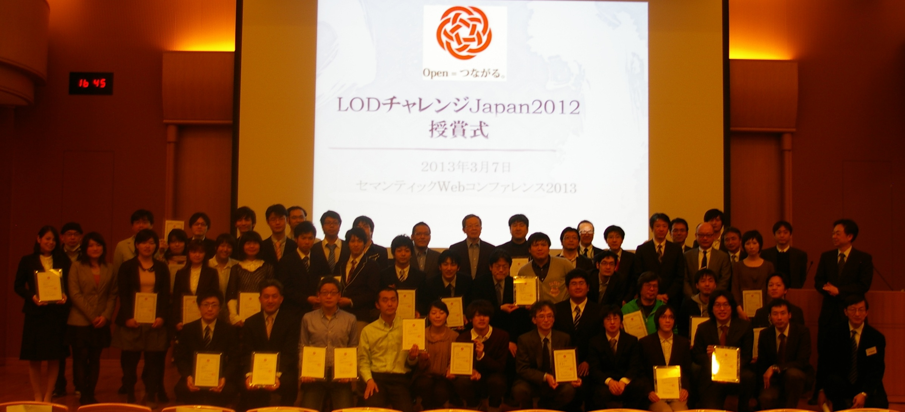

Linked Open Data チャレンジ Japan 2013 作品募集開始のお知らせ
プレスリリース
2013年10月1日
報道関係者各位
LODチャレンジ実行委員会
Linked Open Data チャレンジ Japan 2013 作品募集開始のお知らせ
LODチャレンジ実行委員会（所在：慶應義塾大学環境情報学部萩野研究室、実行委員長：慶應義塾大学環境情報学部教授 萩野 達也)は、本日、2013年10月1日、Linked Open Data チャレンジ Japan 2013 （以下、LODチャレンジ2013）の開催を宣言し、作品募集を開始いたします。
募集は2014年1月6日まで継続し、その後、厳正な審査を経て、3月7日に授賞式を開催し結果を発表いたします。
LODチャレンジは、さまざまな分野でLinked Open Data (LOD) のデータづくりや活用にチャレンジされている方々による活動の発表の場を提供します。新たなデータづくり、データ公開、データ共有の仕掛けやオープンデータ活用のアイディア、アプリケーションなどを「作品」として募集します。オープンデータのコミュニティを醸成し、応募作品をコンテスト形式で評価し合いながら、オープンデータ活用のベストプラクティスを探ることで、日本の新しい未来を創造することを目的とします。
3ヶ月以上にわたる作品募集期間に、LODチャレンジデーと称する講演会、勉強会、アイディアソン、ハッカソンの開催を予定しております。
LODチャレンジは、さまざまな企業・団体からの支援をいただいております。データ提供パートナー、基盤提供パートナーから作品の製作に利用可能なリソースが提供され、応募された優秀な作品、可能性が感じられる作品に対してスポンサーからの支援に基づき、総額150万円以上（予定）の賞金が授与され、その後の活動が支援されます。また、メディアパートナー、サポーター（後援団体）との連携も重視し、コンテストを通して生じた参加者や関係者の活動を広く社会に伝達・浸透させ、社会との相互作用を活性化させる活動や、イベントの共催などを進めます。
＊公式サイト・SNS
公式サイト： http://lod.sfc.keio.ac.jp/challenge2013/
Facebook： http://www.facebook.com/LOD.challenge.Japan
Google+: https://plus.google.com/108435917546080277840
Twitter： @LodJapan
ハッシュタグ：#lod2013
＊LODチャレンジ2013 実施概要
Linked Open Dataに興味があるどなたでも作品応募可能です。
募集作品
前回からさらに部門を増設し、データセット部門、アイディア部門、アプリケーション部門、ビジュアライゼーション部門、基盤技術部門（LODチャレンジ2013で新設）の５部門において作品を募集します。本チャレンジでは、公開された応募作品どうしがつながり新しい価値を創造すること、つまり以下のような応募された作品の再利用を推奨しています。
- データセット部門へ応募されたデータを利用するアイディアをアイディア部門へ応募する。
- アイディア部門へ応募されたアイディアを実現するアプリケーションを開発しアプリケーション部門に応募する。
- アプリケーション部門で応募された作品をより魅力的にするためのアイディアやデータセットを応募する。
- データ、アイディア、アプリケーション作品の魅力や価値を引き出す可視化作品をビジュアライゼーション部門に応募する。
- 基盤技術部門に応募された作品を活用した作品をアプリケーション部門へ応募する。
作品募集期間
2013年10月1日～2014年1月6日
応募方法
公式サイトにある各部門の応募フォームに必要事項を記入の上、ご応募ください。
審査結果発表と表彰
2014年3月7日 (セマンティックWebコンファレンス2014にて授賞式)
賞金総額150万円以上（予定）
審査方法
LODチャレンジ実行委員会で厳選な審査を行い、授賞作品を決定します。
＊LODチャレンジデー
作品募集と連動して、LODチャレンジデーと称する講演会、勉強会、アイディアソン、ハッカソンなどのイベントを開催します。また協力関係にある団体との共催イベントなどを多数計画中です。開催予定は以下のURLをご覧ください。
http://lod.sfc.keio.ac.jp/challenge2013/event.html
※第5回以降のLODチャレンジデーも計画中です。順次公式サイト・SNSで開催案内をいたします。なお、第1～4回についてはプレイベントとして実施済みであり、9月28日は慶應義塾大学三田キャンパスにおいてLODチャレンジ2013 キックオフシンポジウムが実施されています。
＊主催
LODチャレンジ実行委員会
＊Platinumスポンサー(五十音順)
NTTレゾナント株式会社
日本マイクロソフト株式会社
富士通株式会社（予定）
独立行政法人 理化学研究所
＊Goldスポンサー(五十音順)
株式会社アイ・エム・ジェイ
インディゴ株式会社
インフォコム株式会社
株式会社ATR Creative
ＮＰＯまちづくりジャパン事務局 リッツ総合研究所
独立行政法人 科学技術振興機構
サイボウズ株式会社
株式会社ソルトルックス
株式会社ドリコム
日本仮想化技術株式会社
一般財団法人 日本情報経済社会推進協会 （略称：JIPDEC）
BioMed Central（バイオメド・セントラル）
株式会社三菱総合研究所
＊データ提供パートナー(五十音順)
| パートナー名称 | 提供データ |
| オープンストリートマップ・ファウンデーション・ジャパン | 道路地図などのOpenStreetMap地理情報データ |
| 国立国会図書館 | NDLサーチ、Web NDL Authorities、NDL東日本大震災アーカイブ（ひなぎく）の各種データ |
| 国立情報学研究所 | CiNii （NII論文情報ナビゲータ） KAKEN：科学研究費助成事業データベース |
| 鯖江市役所 | 「データシティ鯖江」の行政情報 |
| 独立行政法人統計センター、総務省統計局 | 各種統計データ及び「次世代統計利用システム」において試行提供中の統計API機能 |
| 公益財団法人 横浜市芸術文化振興財団 | LOD化された横浜市内の芸術・文化情報 |
| LODAC: Linked Open Data for Academia | 博物館・美術館，生物種のデータセット及びDBpedia Japaneseのデータセット |
＊基盤提供パートナー(五十音順)
| パートナー名称 | 提供基盤 |
| アシアル株式会社 | iPhone、iPad、Androidスマートフォンやタブレットに対応したネイティブアプリの開発環境を提供するクラウドサービス「Monaca」 |
| NTTコミュニケーションズ株式会社 | パブリッククラウドサービス「Bizホスティング Cloudⁿ(クラウド・エヌ)」を開催期間一定の範囲で無償提供 |
| NTTレゾナント株式会社 | アプリケーション開発者やビジュアライゼーションのデザイナーに、スマートフォンの「リモート・レンタル・サービス」Remote TestKitを一定時間無償提供 |
| 日本マイクロソフト株式会社 | アプリケーション、データ公開のための IaaS/PaaS 基盤として Windows Azure を開催期間中無償提供 |
| 独立行政法人 理化学研究所 | テーブルデータをRDF形式に変換して公開できる支援サイト（LinkData）、またそのデータを利用してアプリを作成できるサービス（LinkData.App） |
※ 提供データ／提供基盤の利用方法などの詳細は、公式サイトに順次掲載予定です。
http://lod.sfc.keio.ac.jp/challenge2013/resource_usage.html
＊メディアパートナー(五十音順)
ITpro
＠IT（アットマーク・アイティ）
ZDNet Japan
日本経済新聞 電子版
＊サポーター（後援団体）(五十音順)
オープンデータ流通推進コンソーシアム
Open Knowledge Foundation Japan
クリエイティブ・シティ・コンソーシアム
経済産業省
一般社団法人 情報処理学会
一般社団法人 人工知能学会
一般社団法人 人工知能学会 セマンティックウェブとオントロジー研究会
セマンティックWeb委員会
総務省
一般社団法人 電子情報技術産業協会
ビッグデータ・オープンデータ活用推進協議会
特定非営利活動法人 リンクト・オープン・データ・イニシアティブ
LinkedData勉強会
※スポンサー、パートナー、サポーターについて、現在就任を検討いただいている団体については、正式なお申し込みがあり次第、公式サイトに順次掲載予定です。
＊LODチャレンジに期待すること
NTTレゾナント株式会社
インターネットポータルサイト「goo」を運営するNTTレゾナントは、これまでPlatinumスポンサーとして、チャレンジ参加者へのLinked Data公開やgoo賞の設置によるベストプラクティスの奨励を行い、オープンデータコミュニティをサポートしてきました。
3年目の今回、モバイルアプリの開発者を支援するため、基盤提供パートナーとしてもクラウド上のスマートフォン実機を用いてアプリの動作検証ができるRemote TestKitを一定時間無料提供します。
チャレンジ参加者がオープンデータと提供基盤を活用し、オープンデータの加工・組み合わせによる価値や可能性を追求する作品を多く生み出すことを期待しています。
日本マイクロソフト株式会社
オープンデータに対する国・自治体の関心の高まりや取り組みの加速は、昨年のLODチャレンジの際と比較しても目覚ましいものがあります。マイクロソフトとしても様々なオープンデータの取り組みを国内外を問わず支援していますが、その中でLODの存在感も一層高まってきています。LODチャレンジによって、より多くのオープンデータやサービスが生み出され、弊社としてもオープン・イノベーションに寄与できることを期待しております。
独立行政法人 理化学研究所
今年からアイデア作品の投稿サイトがスタートしました。
LODチャレンジでは、皆様から今年もたくさんの作品のご応募をお待ちしております。
株式会社アイ・エム・ジェイ
このLODチャレンジの取り組みを通じて、より多くの人にLODに興味を持っていただき、より良い社会のための、あらたな価値創造のきっかけになってくれることを期待しています。
インディゴ株式会社
LODチャレンジがオープンデータに関わる多様な取組みや分野を横断し、それらを繋ぎ新たな価値を創出する触媒となることを期待しています
ＮＰＯまちづくりジャパン事務局 リッツ総合研究所
その不動産から創造される価値とはいったい、何なのでしょうか？
経済的価値
歴史的価値
社会的価値
あるいは、またその土地に生まれ育った人にしかわからない価値
私たちは、不動産分野における価値の共有を目指したいと考えます。まちの未来に貢献する。
株式会社ATR Creative
株式会社ATR Creativeでは、これまでオープンデータの推進支援を目的に大阪・京都を中心にオープンデータに関する勉強会・研究会を開催してきました。
今後、LODチャレンジとの連携を深め、関西でのオープンデータの推進と、Linked Open Dataの普及を支援していきたいと考えています。
独立行政法人 科学技術振興機構
JSTでは科学技術情報を広く取り扱い、そのLOD化を進めています。JSTが提供するデータがLODチャレンジの参加者をはじめ皆様に活用され、新しい価値を生み出すことに繋がれば大変嬉しく思います。またその実現のためにJSTに求められること、期待されることについて皆様と議論、検討させていただく機会を頂戴できれば幸いです。
サイボウズ株式会社
サイボウズは「情報サービスをとおして、世界の豊かな社会生活の実現に貢献する」を理念にクラウドサービスを提供する企業です。データを繋げて大きな価値を創出するLOD運動と弊社理念は通じるところがあり、昨年に引き続き「Linked Open Data（LOD）チャレンジ Japan 2013」に協賛させて頂きます。弊社が提供する無料グループウェア「サイボウズLive」は、企業のみならず学術研究や教育の分野でも広く利用されており、LODチャレンジ実行委員会様の情報共有もサポートさせて頂いております。
株式会社ソルトルックス
LODという新しいフィールドで、とくに若いチャレンジ参加者の皆さまが自由な発想で、世界に通用する新しい事業シーズを創造するのを期待しています
株式会社ドリコム
インターネットの世界に少しでも寄与したいと考えており、インターネットを前進させるために想いを持ち、チャレンジする方を応援しています。今までにない仕組み、データが出てくることを期待しています！
一般財団法人 日本情報経済社会推進協会 （略称：JIPDEC）
私たちJIPDECでは、情報技術により生み出されたデータ群を、安全に保護したうえで、安心して利用ができる環境の整備に向けて、新たな電子情報利活用の仕組みづくりをすすめています。LODチャレンジでは、参加皆様の知力が結集されることにより、新たなサービスや、私たちに安心で安全な豊かな生活を送るために役立つ利用方法が創造されることを期待しています。
BioMed Central（バイオメド・セントラル）
LODチャレンジによって学術出版の世界でOpen Dataがますます普及することを期待しています。
株式会社三菱総合研究所
弊社もオープンデータ流通推進コンソーシアムの事務局という形でオープンデータの推進に積極的に取り組んでいます。今回、スポンサーという形で、微力ながらLODの発展に貢献できればと考えております。
鯖江市役所
世界最先端ＩＴ国家創造宣言（Ｈ25.6.14 閣議決定）
3年で世界Ｎｏ1
そのための一歩を皆さんとあゆみましょう。
独立行政法人 統計センター、総務省統計局
総務省統計局は、我が国の社会経済情勢を把握する国勢の基本に関する統計を通じて、政府統計の中核的機関としての役割を担っています。また、独立行政法人統計センターは、我が国の基幹的な統計の製表（集計）の実施、統計整備の支援、統計利用環境の充実等により公的統計制度を支えており、両者の連携によって国民の皆様が公的統計を社会の情報基盤として活用できるよう貢献しています。
特に、統計データの利活用については、総務省統計局が中心となって整備を行い、統計センターが運営管理を担っている「政府統計共同利用システム」を通じて、政府が作成、公表する幅広い分野の統計に関する情報提供のワンストップサービスの実現を図っています。
今般のLODチャレンジを通じて、現在「次世代統計利用システム」において試行提供中の統計API機能を最大限に活用していただきたいと考えております。これにより、単に集計表の形でしか提供されてこなかった公的統計に、これまでにはなかった利活用やビジュアライゼーションのアイディアによって新しい命を吹き込んでいただき、国民の皆様のさらなる合理的な意思決定への寄与につながれば幸いです。
公益財団法人 横浜市芸術文化振興財団
（公財）横浜市芸術文化振興財団がオープンデータに対応してから4年、LODチャレンジと共に歩んできました。今年度は、文化芸術や観光のみならず、市民生活をつなぐサービスが産官学協働によって創発され、その多様な可能性が心豊かな市民生活の未来を拓くことを期待します。
アシアル株式会社
LODチャレンジをきっかけにオープンデータを活用した優れたアプリケーションが生まれることを期待しています。
NTTコミュニケーションズ株式会社
オープンデータを活用し、多くの魅力的かつ市場に役立つサービスが登場することを期待しています。
オープンデータ流通推進コンソーシアム
オープンデータが社会的に注目される以前から、コンテストを通して普及・啓発に取り組んできた「老舗」として、今後の発展に期待。
さらには、オープンデータよりも一段難易度の高い「Linked Open Data」に先行的に取り組んできた点も評価。
今後、オープンデータ関連のイベント（各種コンテスト、セミナー、ハッカソン/アイデアソンなど）が増加する中、常に一歩先を行く取り組みとして、皆の目標になるような活動を継続していただければと思います。
当コンソーシアムとしても、LODチャレンジを積極的に支援するとともに、他の活動との連携・協同に向けた橋渡し役などを、努めていきたいと思います。
Open Knowledge Foundation Japan
Open Knowledge Foundation Japan (OKFJ) は、政府保有データをはじめとする多様なデータの生成・公開・利用を支援し、データの活用を通じて人の行動やシステムの挙動を洗練化し、経済、人々の生活、民主主義、学術研究などの質を向上させた社会の実現を目指しています。この理念とも重なりのあるLODチャレンジの活動を後援し協調することで、オープンデータが実際に使われて生まれるオープンナレッジやイノベーションをつなげていきたいと考えています。
クリエイティブ・シティ・コンソーシアム
当コンソーシアムは次世代の街づくりを考えるコンソーシアムですが、これからの街づくりを考えるなかで、オープンデータ活用は非常に重要なテーマだと考えています。オープンデータ活用を加速させるLODの発展、及びそのけん引役としてのLODチャレンジの活動に大きな期待をもって注目させて頂いております。
経済産業省
国内では経済産業省のデータカタログサイトであるOpen DATA METIをはじめとしたオープンデータの取組が広がっています。一方で、海外では公共機関が保有するデータを活用した新ビジネスが登場しつつあるところであり、オープンデータは公開するだけではなく、いかに皆さんに活用されるかが肝要です。
LODチャレンジにおいて、活発に利用者の掘り起こしや情報共有がなされ、オープンデータの活用促進が図られることにより、日本におけるオープンデータの取組がますます発展することを祈っております。
経済産業省商務情報政策局情報政策課情報プロジェクト室長 和田 恭
ビッグデータ・オープンデータ活用推進協議会
LODチャレンジが、オープンデータの活用促進に向けた大きなうねりとなり、私たちの「くらし」を、より便利で安心なものに「変える」ような、これまでにない新たな価値が創出されることを期待しています。
本協議会もその一助となるよう、積極的に活用推進に取り組んでいきます。
特定非営利活動法人 リンクト・オープン・データ・イニシアティブ
特定非営利活動法人リンクト・オープン・データ・イニシアティブはその団体名が示すようにLODの普及と発展に寄与すべく設立されました。
LODが目指すのは単なるオープンデータではなく、相互に連携できるオープンデータです。
データとデータの組み合わせ方ひとつで次々に新しい価値が生み出されます。
そんな、LODの魅力と可能性をチャレンジの参加者のみなさんによって示していただけることを楽しみにしています！
※LODチャレンジに期待することについては、任意でご寄稿いただいた団体のコメントを掲載しております。今後いただいたコメントは順次以下に掲載予定です。
http://lod.sfc.keio.ac.jp/challenge2013/recommendation.html
＊本件連絡先
LODチャレンジ実行委員会 事務局
〒252-0882 神奈川県藤沢市遠藤5322
慶應義塾大学環境情報学部 萩野研究室内

【参考】
＊Linked Open Data（LOD）とは
Linked Open Data（LOD）は、Webの技術を利用して、計算機が処理しやすい形式で情報を共有する、新しい仕組みです。インターネット上のオープンな場へLODの形式で発信することで、情報を多くの人々へ広くかつ迅速に伝えることが可能となります。また、発信された情報を、Web上で共有したり相互につなげる(Linkする)ことによって、Web上に巨大な知識データベースが形成されています。こうした知識を利用することで、価値ある新しいサービスが立ち上がり始めています。
これまでのWebは、HTMLで書かれた文書どうしがハイパーリンクで結ばれた、「文書のWeb」でした。人間は、ハイパーリンクをたどって文書を閲覧したり、検索エンジンサービスに対してキーワード検索することにより、情報へアクセスしていました。例えば、ある書籍についての情報を、出版社、書店、図書館、クチコミなどの各Webサイトが持っていたとしましょう。それらが同じ書籍についての情報であることは、人間が読むと理解できますが、計算機に判定させるためには、書籍のタイトルや著者などの名称を抽出したり、同一の名称かどうかを調べたりするなど、ひと手間かける必要があります。
LODは、計算機が処理しやすいように、書籍のタイトルや著者といった最小単位のデータを扱い、それらのデータどうしをリンクで結ぶことによって、情報を表現できるようにしたものです。これらの情報をインターネット上のオープンな場へ発信し共有することによって、他の計算機が参照したり、新しいデータをリンクとともに付加したりすることが可能となります。Linking Open Data運動を通して、LOD形式のデータの公開とリンクが広まってきており、インターネット上に「データのWeb」と呼ばれる巨大なデータベースが形成されています。
＊“オープン”はデータや人をつなげます
社会や産業の基盤となりうるデータを共有化し、つなぎあわせることが、データの価値を高め、社会や経済に寄与するとの考え方が世界中のあらゆる分野で広まっています。2011年3月に東北地方を襲った大震災直後の混乱の中では、Webが社会的なインフラとして大きな力を発揮しました。ネット上で多くの人々が情報を出し合い、つなぎ合わせることで、価値あるサービスが即座に立ち上がるとともに、そこからネットを介した支援活動の輪が広がりました。このように、多くの人々がオープンにしたデータ(Open Data)を、皆でつなげて(Linkして)大きな価値を生み出していく運動は「Linking Open Data」と呼ばれ、世界中のあらゆる分野で急速に広がっています。この活動を通して、私たちの創造力と、つながろうとする力とが様々なサービスを生みだし、私たちのライフスタイルを大きく進化させることでしょう。
＊ LODチャレンジは3年目に突入、一昨年、昨年と大きく成長を続けています。
2011年度のLODチャレンジ2011は、初めての試みにも関わらず、84の個人、団体、グループから計73作品ものご応募と、スポンサー8社、パートナー/サポーター 8団体の支援をいただきました。昨年度(2012年度)はデータセット、アイディア、アプリケーションの3部門に加え、新たにビジュアライゼーション部門を設立し、データの価値や魅力を 引き出す作品の募集を行いました。4ヶ月にわたる募集期間(2012年10月1日～2013年1月31日)に、4部門合わせて計205作品もの応募があり、スポンサー13社、パートナー/サポーター28団体の支援がありました。4ヶ月にわたる作品募集期間には、作品づくりに取り組む方々や、LODチャレンジに賛同の企業・団体の交流、および活動の活性化を目的として、LODチャレンジデーと称する講演会、勉強会、アイディアソン、ハッカソンなどのイベントを6都市で計10回開催しました。本年度も皆さまからのご参加、ご支援をよろしくお願いいたします。
LODチャレンジ2012活動報告
http://lod.sfc.keio.ac.jp/blog/?p=1306
Linked Open Data チャレンジ Japan 2012 受賞作品発表のお知らせ
http://lod.sfc.keio.ac.jp/blog/?p=1071
＊ LODチャレンジ実行委員会メンバー
実行委員長
萩野達也 (慶應義塾大学)
副委員長
豊田哲郎(独立行政法人理化学研究所)
長野伸一(株式会社東芝)
事務局長
乙守信行 (株式会社MetaMoJi)
幹事
鈴木孝幸 (神奈川工科大学)
LODチャレンジ関西支部 支部長
古崎晃司（大阪大学）
LODチャレンジ東海支部 支部長
年岡晃一 (中部大学)
実行委員（五十音順）
浅野優（株式会社日立製作所）
生島高裕(株式会社数理先端技術研究所)
氏家真(株式会社ソルトルックス)
加藤文彦(大学共同利用機関法人情報・システム研究機構)
加茂春菜(株式会社アイ・エム・ジェイ)
粂照宣(株式会社富士通研究所)
小林巌生(有限会社スコレックス)
佐藤宏之(NTTレゾナント株式会社)
渋谷健(株式会社ゼンリン)
下山紗代子(独立行政法人理化学研究所)
白松俊（名古屋工業大学)
高梨益樹(富士通株式会社)
高橋陽一(インディゴ株式会社)
立堀道昭(日本IBM株式会社)
中野圭(武蔵野美術大学)
西村一彦(株式会社ボイスリサーチ)
羽鳥健太郎(独立行政法人情報処理推進機構)
本多裕美
松村冬子（青山学院大学）
山口悠(独立行政法人情報処理推進機構)
山崎耕平(ソフトバンクテレコム株式会社)
山本泰智（ライフサイエンス統合データベースセンター）
米村卓(株式会社数理先端技術研究所)
和田康宏